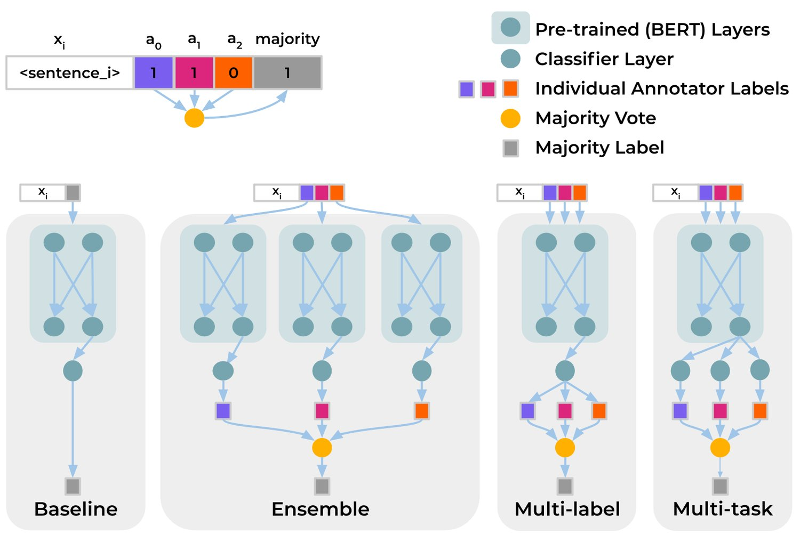
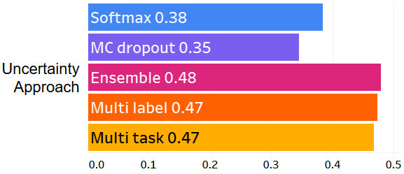
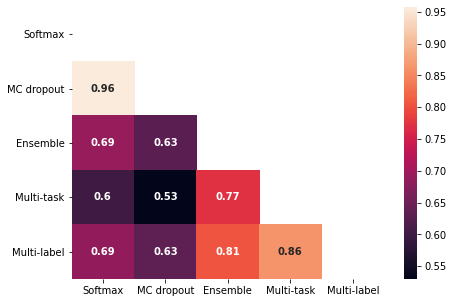
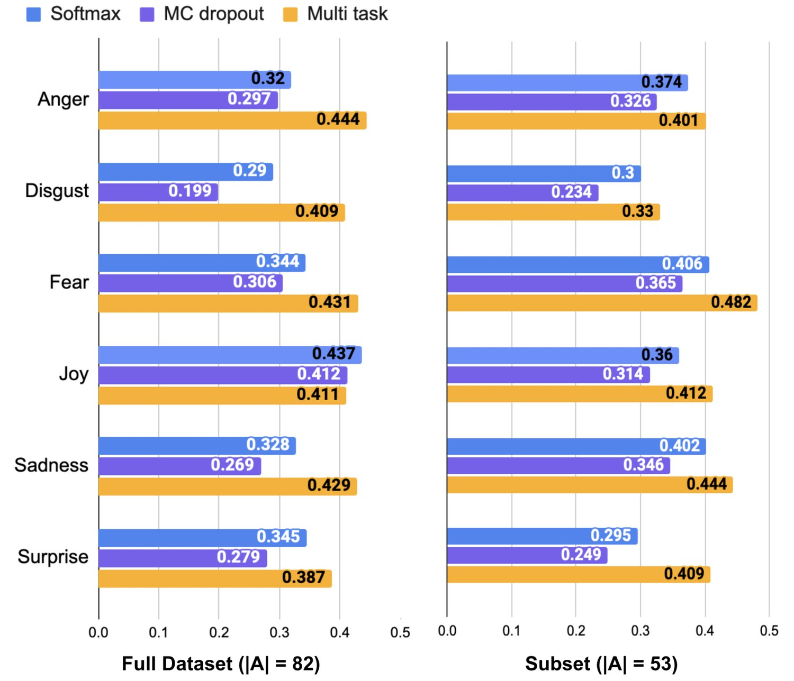
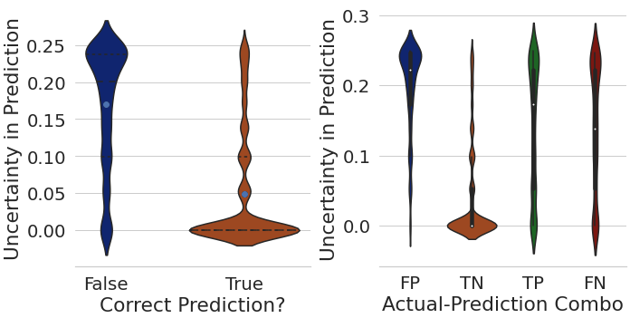

Dealing with Disagreements: Looking Beyond the Majority Vote in Subjective Annotations
Majority voting and averaging are common approaches employed to resolve annotator disagreements and derive single ground truth labels from multiple annotations. However, annotators may systematically disagree with one another, often reflecting their individual biases and values, especially in the case of subjective tasks such as detecting affect, aggression, and hate speech. Annotator disagreements may capture important nuances in such tasks that are often ignored while aggregating annotations to a single ground truth. In order to address this, we investigate the efficacy of multi-annotator models. In particular, our multi-task based approach treats predicting each annotators’ judgements as separate subtasks, while sharing a common learned representation of the task. We show that this approach yields same or better performance than aggregating labels in the data prior to training across seven different binary classification tasks. Our approach also provides a way to estimate uncertainty in predictions, which we demonstrate better correlate with annotation disagreements than traditional methods. Being able to model uncertainty is especially useful in deployment scenarios where knowing when not to make a prediction is important.
Obtaining multiple annotator judgements on the same data instances is a common practice in NLP in order to improve the quality of final labels Snow et al. (2008); Nowak and Rüger (2010). In case of disagreements between annotations, they are often aggregated by majority voting, averaging Sabou et al. (2014), or adjudicating by an ‘expert’ (Waseem and Hovy, 2016), to derive a singular ground truth or gold label that is later used for training supervised machine learning models. However, in many subjective tasks, there often exists no such single “right” answer (Alm, 2011) and enforcing a single ground truth sacrifices the valuable nuances embedded in annotator’s assessments of the stimuli and their disagreements Aroyo and Welty (2013); Cheplygina and Pluim (2018)
在 NLP 中，就同一批数据实例收集多位标注者的判断是一种常见做法，目的在于提升最终标签的质量（Snow 等 2008；Nowak 和 Rüger 2010）。当标注之间出现分歧时，人们通常用多数投票、取平均（Sabou 等 2014）或由一位“专家”裁定（Waseem 和 Hovy，2016）来聚合，从而得到一个单一的真值标签或金标签，供后续训练有监督的机器学习模型使用。然而在许多主观性任务中，往往并不存在这样一个单一的“正确”答案（Alm，2011），而强加单一真值会牺牲掉标注者对刺激的评估及其分歧中所蕴含的宝贵细微差别（Aroyo 和 Welty 2013；Cheplygina 和 Pluim 2018）。
Annotators’ socio-demographic factors, moral values, and lived experiences often influence their interpretations, especially in subjective tasks such as identifying political stances (Luo et al., 2020), sentiment Díaz et al. (2018), and online abuse and hate speech Cowan and Khatchadourian (2003); Waseem (2016); Patton et al. (2019). For instance, Waseem (2016) found that feminist and anti-racist activists systematically disagree with crowd workers on their hate speech annotations. Similarly, annotators’ political affiliation affect how they annotate the neutrality of political stances (Luo et al., 2020). An adverse effect of majority vote in such cases is limiting representation of minority perspectives in data Prabhakaran et al. (2021), potentially reinforcing societal disparities and harms.
标注者的社会人口学因素、道德价值观与生活经历常常影响他们的解读，在识别政治立场（Luo 等，2020）、情感（Díaz 等 2018）以及网络辱骂与仇恨言论（Cowan 和 Khatchadourian 2003；Waseem 2016；Patton 等，2019）等主观性任务上尤其如此。例如，Waseem（2016）发现，女性主义者与反种族主义活动人士在仇恨言论标注上与众包工作者存在系统性分歧。类似地，标注者的政治派别会影响他们如何标注政治立场的中立性（Luo 等，2020）。在这类情形下，多数投票的一个负面后果是限制了数据中少数群体视角的代表性（Prabhakaran 等，2021），可能固化社会不平等与伤害。
Another consequence of majority voting, when applied to subjective annotations, is that the resulting labels may not be internally consistent. For example, consider a scenario where a sentence in a hate-speech dataset is annotated by a set of annotators, the majority of whom consider a phrase in it to be offensive, yet another sentence with the same phrase is annotated by a different set of annotators, the majority of whom do not find the phrase to be offensive. Upon majority vote, the first sentence would be labeled as hate speech and the second sentence would not, despite containing similar content. Such inconsistencies in the majority label will add noise to the learning step, while the systematicity in the individual annotations is lost.
把多数投票用于主观性标注的另一个后果是，所得标签可能不具备内部一致性。举例来说，考虑这样一个场景：仇恨言论数据集中某个句子由一组标注者标注，其中多数人认为句中的某个短语具有冒犯性；而另一个含有相同短语的句子由另一组标注者标注，其中多数人并不认为该短语具有冒犯性。经过多数投票，第一个句子会被标为仇恨言论，第二个则不会，尽管二者内容相似。多数标签中的这类不一致会给学习环节引入噪声，而个体标注中的系统性却被丢掉了。
Finally, majority vote and similar aggregation approaches assume that an annotator’s judgements about different instances are independent from one another. However, as outlined above, annotators’ decisions are often correlated, reflecting their subjective biases. Prior work has investigated Bayesian methods to account for such systematic differences between annotators Paun et al. (2018), however, they approach this as an alternate means to derive a single ground truth label, thereby masking the degree to which annotators disagreed.
最后，多数投票及类似的聚合方法都假定标注者对不同实例的判断彼此独立。然而如上所述，标注者的决定常常是相关的，反映出他们的主观偏见。前人工作已研究用贝叶斯方法来刻画标注者之间的这类系统性差异（Paun 等，2018），但它们把这当作获取单一真值标签的替代手段，从而掩盖了标注者之间的分歧程度。
Our proposed solution is simple: we introduce multi-annotator architectures to preserve and model the internal consistency in each annotators’ labels as well as their systematic disagreements with other annotators. We show that the multi-task framework Liu et al. (2019) provides an efficient way to implement a multi-annotator architecture that captures the differences between individual annotators’ perspectives using the subset of data instances they labeled, while also benefiting from the shared underlying layers fine-tuned for the task using the entire dataset. Preserving different annotators’ perspectives until prediction step provides better flexibility for downstream applications. In particular, we demonstrate that it provides better estimates for uncertainty in predictions. This will improve decision making in practice, for instance, to determine when not to make a prediction or when to recommend a manual review.
我们提出的方案很简单：引入多标注者架构，以保留并建模每位标注者标签中的内部一致性，以及他们与其他标注者之间的系统性分歧。我们表明，多任务框架（Liu 等，2019）为实现多标注者架构提供了一条高效途径：它利用每位标注者所标注的数据子集来捕捉个体视角之间的差异，同时又能受益于针对该任务、使用整个数据集微调的共享底层。把不同标注者的视角一直保留到预测步骤，为下游应用提供了更大的灵活性。我们特别证明，它为预测中的不确定性提供了更好的估计，这将改善实践中的决策，例如判断何时不做预测、何时建议人工复核。
Our contributions in this paper are three-fold: 1) We develop an efficient multi-annotator strategy that matches or outperforms baseline models on seven different subjective tasks by preserving annotators’ individual and collective perspectives throughout the training process; 2) We obtain an interpretable way to estimate model uncertainty that better correlates with annotator disagreements than traditional uncertainty estimates across all seven tasks. 3) We demonstrate that model uncertainty correlates with certain types of error, providing a useful signal to avoid erroneous predictions in real-world deployments.
本文的贡献有三方面：1）我们提出一种高效的多标注者策略，通过在训练全程保留标注者的个体视角与集体视角，在七项不同的主观性任务上达到或超过基线模型；2）我们得到一种可解释的模型不确定性估计方式，它在全部七项任务上与标注者分歧的相关性都优于传统的不确定性估计；3）我们证明模型不确定性与某些类型的错误相关，为在现实部署中避免错误预测提供了有用的信号。
Learning to recognize and interpret subjective language has a long history in NLP Wiebe et al. (2004); Alm (2011). While all human judgments embed some degree of subjectivity, it is commonly agreed that certain NLP tasks tend to be more subjective in nature. Examples of such relatively subjective tasks include sentiment analysis Pang and Lee (2004); Liu et al. (2010), affect modeling Alm (2008); Liu et al. (2003), emotion detection Hirschberg et al. (2003); Mihalcea and Liu (2006), and hate speech detection Warner and Hirschberg (2012). Alm (2011) argue that achieving a single real ‘ground truth’ is not possible, nor essential, in subjective tasks, and call for finding ways to model subjective interpretations of annotators, rather than seeking to reduce the variability in annotations. While which NLP tasks count as subjective may be contested, we focus on two tasks that are markedly subjective in nature.
学习识别与解读主观性语言在 NLP 中有着悠久历史（Wiebe 等 2004；Alm 2011）。尽管所有人类判断都带有某种程度的主观性，但人们普遍认同某些 NLP 任务在性质上更为主观。这类相对主观的任务包括情感分析（Pang 和 Lee 2004；Liu 等 2010）、情感建模（Alm 2008；Liu 等 2003）、情绪检测（Hirschberg 等 2003；Mihalcea 和 Liu 2006）与仇恨言论检测（Warner 和 Hirschberg 2012）。Alm（2011）主张，在主观性任务中获得单一真实的“真值”既不可能也无必要，并呼吁寻找建模标注者主观解读的方式，而不是设法减少标注中的变异。虽然哪些 NLP 任务算作主观性任务可能存在争议，我们聚焦于两项性质上明显主观的任务。
NLP-aided approaches to detect abusive behavior online is an active research area Schmidt and Wiegand (2017); Mishra et al. (2019); Corazza et al. (2020). Researchers have developed typologies of online abuse (Waseem et al., 2017), constructed datasets annotated with different types of abusive language (Warner and Hirschberg, 2012; Price et al., 2020; Vidgen et al., 2021), and built NLP models to detect them efficiently (Davidson et al., 2017; Mozafari et al., 2019). Researchers have also expanded the focus to more subtle forms of abuse such as condescension and microaggressions Breitfeller et al. (2019); Jurgens et al. (2019).
用 NLP 辅助的方法检测网络辱骂行为是一个活跃的研究领域（Schmidt 和 Wiegand 2017；Mishra 等 2019；Corazza 等 2020）。研究者建立了网络辱骂的类型学（Waseem 等，2017），构建了标注不同类型辱骂性语言的数据集（Warner 和 Hirschberg，2012；Price 等，2020；Vidgen 等，2021），并建立了高效检测它们的 NLP 模型（Davidson 等，2017；Mozafari 等，2019）。研究者还把关注范围扩展到更隐蔽的辱骂形式，例如居高临下与微侵犯（Breitfeller 等 2019；Jurgens 等 2019）。
However, recent research has demonstrated that these models tend to reflect and propagate various societal biases, causing disparate harms to marginalized groups. For instance, toxicity prediction models were shown to have biases towards mentions of certain identity terms (Dixon et al., 2018), specific named entities (Prabhakaran et al., 2019), and disabilities (Hutchinson et al., 2020). Similarly these models are shown to overestimate the prevalence of toxicity in African American Vernacular English (Sap et al., 2019; Davidson et al., 2019; Zhou et al., 2021). Most of these studies demonstrate association biases present in data; for instance, Hutchinson et al. (2020) show that discussions about mental illness are often associated with topics such as gun violence, homelessness, and drugs, likely the reason for the learned association of mental illness related terms with toxicity. While whether a piece of text is hateful or not depends also on the context Prabhakaran et al. (2020), not much work investigated the human annotator biases present in the training labels, and how they impact downstream predictions.
然而近期研究表明，这些模型倾向于反映并传播各种社会偏见，对边缘群体造成差异化的伤害。例如，毒性预测模型被证明对提及某些身份词（Dixon 等，2018）、特定命名实体（Prabhakaran 等，2019）与残障（Hutchinson 等，2020）存在偏见；类似地，这些模型被证明会高估非裔美国人英语中毒性的普遍程度（Sap 等，2019；Davidson 等，2019；Zhou 等，2021）。这些研究大多揭示了数据中存在的关联偏见，例如 Hutchinson 等（2020）表明，关于精神疾病的讨论常与枪支暴力、无家可归与毒品等话题相关联，这很可能是模型学到精神疾病相关词汇与毒性之间关联的原因。虽然一段文本是否带有仇恨也取决于语境（Prabhakaran 等，2020），但考察训练标签中存在的人类标注者偏见、以及它们如何影响下游预测的工作并不多。
Detecting emotions from language has been a significant area of research in NLP for the past two decades Liscombe et al. (2003); Aman and Szpakowicz (2007); Desmet and Hoste (2013); Hirschberg and Manning (2015); Poria et al. (2019). Annotated datasets used for training emotion detection models vary across domains, and use different taxonomies of emotions. While several datasets (Strapparava and Mihalcea, 2007; Buechel and Hahn, 2017) include a small set of labels representing the six Ekman emotions (Ekman, 1992) — anger, disgust, fear, joy, sadness, and surprise), or bipolar dimensions of affect — arousal and valence (Russell, 2003), others such as Demszky et al. (2020) and Crowdflower (2016) include a wider range of emotion labels according to the Plutchik emotion wheel (Plutchik, 1980) or the complex semantic space of emotions Cowen et al. (2019). Perceiving emotions is a subjective task affected by various contextual factors, such as time, speaker, mood, personality, and culture (Mower et al., 2009). Since aggregating annotations of emotion expressions loses such contextual nuances, some researchers provide a distributional representation of emotions (Fayek et al., 2016; Ando et al., 2018). Here, we use annotations for the six Ekman emotions present in the dataset released by Demszky et al. (2020) to demonstrate how our multi-annotator approach can capture emotions in a dis-aggregated fashion.
从语言中检测情绪是过去二十年 NLP 的一个重要研究方向（Liscombe 等 2003；Aman 和 Szpakowicz 2007；Desmet 和 Hoste 2013；Hirschberg 和 Manning 2015；Poria 等 2019）。用于训练情绪检测模型的标注数据集跨领域而异，并使用不同的情绪分类体系。部分数据集（Strapparava 和 Mihalcea，2007；Buechel 和 Hahn，2017）包含代表 Ekman 六种情绪（Ekman，1992）——愤怒、厌恶、恐惧、喜悦、悲伤与惊讶——的少量标签，或情感的 bipolar 维度——唤醒度与效价（Russell，2003）；而 Demszky 等（2020）与 Crowdflower（2016）等其他数据集则依据 Plutchik 情绪轮（Plutchik，1980）或复杂的情绪语义空间（Cowen 等，2019）包含更广的情绪标签。感知情绪是一项受时间、说话者、心境、人格与文化等多种语境因素影响的主观性任务（Mower 等，2009）。由于聚合情绪表达的标注会丢失这类语境细微差别，一些研究者提供了情绪的分布式表示（Fayek 等，2016；Ando 等，2018）。这里我们使用 Demszky 等（2020）发布的数据集中针对 Ekman 六种情绪的标注，来展示我们的多标注者方法如何以非聚合的方式捕捉情绪。
Researchers have studied different sources of annotator disagreements. Krippendorff (2011) argued that there are at least two types of disagreement in content coding: random variation, that comes as an unavoidable by-product of human coding, and systematic disagreement, that is influenced by features of the data or annotators. Dumitrache (2015) identifies different sources of disagreement as (a) the clarity of an annotation label (i.e., task descriptions), (b) the ambiguity of the text, and (c) differences in workers. Aroyo and Welty (2013) also studied inter-annotator disagreement in association with features of the input, showing that it reflects semantic ambiguity of the training instances. Textual features have been shown to predict annotators’ disagreement in determining the meaning of ambiguous words Alonso et al. (2015). Acknowledging inter-annotator disagreement as an indicator of annotator differences, Kairam and Heer (2016) clustered crowd-workers based on their annotation behaviors, and proposed a method for interpreting annotation disagreements and its sources.
研究者考察了标注者分歧的不同来源。Krippendorff（2011）主张内容编码中至少存在两类分歧：随机变异，它是人工编码不可避免的副产品；以及系统性分歧，它受数据或标注者特征的影响。Dumitrache（2015）把分歧的来源识别为（a）标注标签的清晰度（即任务描述）、（b）文本的歧义性，以及（c）工作者之间的差异。Aroyo 和 Welty（2013）也结合输入特征研究了标注者之间的分歧，表明它反映了训练实例的语义歧义。文本特征已被证明可预测标注者在判定歧义词含义时的分歧（Alonso 等，2015）。Kairam 和 Heer（2016）把标注者之间的分歧视为标注者差异的指标，依据标注行为对众包工作者聚类，并提出了一种解读标注分歧及其来源的方法。
For highly subjective tasks such as hate speech and emotions detection, annotation disagreements can be rooted in the differing subjectivities and value systems of annotators. In these cases, annotators build a subjective social reality as a basis for social judgments and behaviors (Greifeneder et al., 2017), which explains their labeling procedure. For example, in interviews with annotators in an aggression labeling task, Patton et al. (2019) found that expert annotators from communities discussed in gang-related tweets drew on their lived experience to produce different label judgements compared with graduate student researchers. Such annotators whose lived experiences bring important perspectives to the task would be dramatically underrepresented on generic crowd work platforms and, by definition, would be outvoted in disagreements subject to majority vote. Majority vote also necessarily obfuscates differences among groups underrepresented in annotator pools, such as older adults who can exhibit views on aging distinct from crowd workers Díaz (2020), the majority of whom tend to be younger (Ross et al., 2010).
在仇恨言论与情绪检测这类高度主观的任务上，标注分歧可能根植于标注者各异的主观性与价值体系。在这类情形下，标注者构建出一种主观的社会现实作为社会判断与行为的基础（Greifeneder 等，2017），这解释了他们的标注过程。例如，在一项攻击性标注任务中对标注者的访谈里，Patton 等（2019）发现，来自与帮派相关推文所讨论群体的专家标注者会依据自身生活经历做出与研究生的不同标签判断。这类标注者的生活经历为任务带来重要视角，而在通用的众包平台上他们会严重缺乏代表性，并且按定义，在受多数投票支配的分歧中会被投票出局。多数投票还必然会掩盖标注者池中代表性不足群体之间的差异，例如老年人对衰老持有不同于众包工作者的看法（Díaz，2020），而后者多数偏年轻（Ross 等，2010）。
Some studies have proposed alternatives to majority voting when aggregating multiple annotations. In early work, Dawid and Skene (1979) used the EM algorithm to obtain maximum likelihood estimates of the “true” label to account for annotator errors. De Marneffe et al. (2012) used the individual annotation distributions to predict areas of uncertainty in veridicality assessment. Hovy et al. (2013) proposed an approach based on item-response model that uses posterior entropy to choose which annotators are trustworthy. Waterhouse (2013) developed a pointwise mutual information metric to quantify the amount of information in an annotator’s judgment that can be used to estimate the “correct” label of an instance. Gordon et al. (2021) explore multiple annotators judgements to disentangle stable opinions from noise by estimating intra-annotator consistency. All these approaches aim to obtain the “correct” label, accounting for erroneous or non-trustworthy annotators, whereas we focus on retaining the annotator disagreements through the modeling process.
一些研究提出了聚合多条标注时替代多数投票的方法。早期工作中，Dawid 和 Skene（1979）用 EM 算法获得“真实”标签的极大似然估计，以刻画标注者误差。De Marneffe 等（2012）用个体标注分布来预测真实性判定中的不确定性区域。Hovy 等（2013）提出了一种基于项目反应模型的方法，用后验熵来选择哪些标注者可信。Waterhouse（2013）提出了一种逐点互信息指标，用于量化标注者判断中可用于估计实例“正确”标签的信息量。Gordon 等（2021）通过估计标注者内部一致性，利用多个标注者的判断把稳定意见与噪声分离开来。这些方法都以获取“正确”标签为目标，并处理有错误或不可信的标注者；而我们关注的是在建模过程中保留标注者之间的分歧。
A few studies have explored approaches for utilizing annotation disagreement during model training. Prabhakaran et al. (2012) explored applying higher cost for errors made on unanimous annotations to decrease the penalty of mis-labeling inputs with higher disagreement. Similarly, Plank et al. (2014) incorporated annotator disagreement into the loss function of a structured perceptron model for better predicting part-of-speech tags. Our work also utilizes annotator disagreements rather than resolving them in the data stage; however, we use a multi-task architecture using a shared representation to model annotator disagreements, rather than using it in loss function. Cohn and Specia (2013) use a multi-task approach to model annotator differences in machine translation annotations. While they use a Gaussian Process approach, we use the multi-task approach on top of pre-trained language models Liu et al. (2019). Chou and Lee (2019) proposed an approach where they model individual annotators separately in an inner layer to improve the final prediction. In contrast, our method uses the multi-task architecture, and provides the additional ability to utilize multiple predictions during deployment, for instance, to measure uncertainty. Fornaciari et al. (2021) also leveraged annotator disagreement using a multi-task model that adds an auxiliary task to predict the soft label distribution over annotator labels, which improves the performance even in less subjective tasks such as part-of-speech tagging. In contrast, our approach models several annotators’ labels as multiple tasks and obtains their disagreement.
少数研究探索了在模型训练中利用标注分歧的途径。Prabhakaran 等（2012）探索对一致标注上的错误施加更高代价，以降低误标高分歧输入的惩罚。类似地，Plank 等（2014）把标注者分歧纳入结构化感知机模型的损失函数，以更好地预测词性标签。我们的工作同样利用标注者分歧，而不是在数据阶段解决它们；不过我们使用带共享表示的多任务架构来建模标注分歧，而非在损失函数中加以利用。Cohn 和 Specia（2013）用多任务方法建模机器翻译标注中的标注者差异，他们使用高斯过程方法，而我们则把多任务方法用在预训练语言模型之上（Liu 等，2019）。Chou 和 Lee（2019）提出了一种在内层分别建模各个标注者以改进最终预测的方法；相比之下，我们的方法使用多任务架构，并额外提供了在部署时利用多个预测的能力，例如度量不确定性。Fornaciari 等（2021）也用多任务模型利用了标注分歧，其增加一个辅助任务来预测标注者标签上的软标签分布，即便在词性标注等较不主观的任务上也能提升性能；相比之下，我们的方法把若干标注者的标签建模为多个任务并由此获得它们的分歧。
Model uncertainty denotes the confidence of model predictions, which has specific applications in non-deterministic machine learning tasks. For instance, interpreting model outputs and its confidence is critical in autonomous vehicle driving, where wrong predictions are costly or harmful Schwab and Karlen (2019). In subjective tasks, uncertainty embeds additional information that supports result interpretation (Ghandeharioun et al., 2019). For example, the level of uncertainty could help determine when and how moderators take part in a human-in-the-loop content moderation Chandrasekharan et al. (2019); Liu (2020).
模型不确定性表示模型预测的置信程度，在非确定性机器学习任务中有特定用途。例如，在自动驾驶中解读模型输出及其置信度至关重要，因为错误的预测代价高昂或有害（Schwab 和 Karlen 2019）。在主观性任务中，不确定性蕴含支持结果解读的额外信息（Ghandeharioun 等，2019）。例如，不确定性水平可帮助判断审核人员何时、以何种方式参与到人机协同的内容审核中（Chandrasekharan 等，2019；Liu，2020）。
The simplest approach for uncertainty estimation is through prediction probability from a Softmax distribution Hendrycks and Gimpel (2017). However, as the input data gets farther from the training data, this probability estimation naturally yields extrapolations with unsupported high confidence (Gal and Ghahramani, 2016). Instead, Gal and Ghahramani (2016) proposed the Monte Carlo dropout approach to estimate uncertainty by iteratively applying dropouts to all layers of the model and calculating the variance of generated outputs. Such estimations based on the probability of a single ground truth label overlooks the many factors that contribute to uncertainty Kläs and Vollmer (2018). In contrast, Passonneau and Carpenter (2014) demonstrate the benefits of measuring uncertainty for the ground truth label by fitting a probabilistic model to individual annotators’ observed labels. Similarly, we demonstrate that calculating annotation disagreement by predicting a set of annotations for the input yields a better estimation of uncertainty than estimations based on the probability of the majority label.
最简单的不确定性估计方式是取 Softmax 分布给出的预测概率（Hendrycks 和 Gimpel，2017）。然而随着输入数据越来越远离训练数据，这种概率估计自然会产生没有依据的高置信外推（Gal 和 Ghahramani，2016）。为此，Gal 和 Ghahramani（2016）提出了蒙特卡洛 dropout 方法：迭代地对模型所有层施加 dropout，并计算所生成输出的方差，以此估计不确定性。这类基于单一真值标签概率的估计忽略了造成不确定性的诸多因素（Kläs 和 Vollmer，2018）。相比之下，Passonneau 和 Carpenter（2014）证明，通过对个体标注者的观测标签拟合概率模型来度量真值标签的不确定性是有益的。类似地，我们证明通过预测输入的一组标注来计算标注分歧，比基于多数标签概率的估计能得到更好的不确定性估计。

图 1：多标注者模型（集成、多标签与多任务）与多数标签预测（基线）两类方法的比较。标注预测模型基于全部标注训练，并采用多数投票预测最终标签。
We define the classification task on an annotated dataset , in which is a set of text instances, is the set of annotators and is the annotation matrix, in which each entry represents the label assigned to by . In most annotated datasets includes many missing values, because each annotator only labels a subset of all instances. We use to refer to the annotations present for item . Similarly, we use to refer to the annotations made by annotator . The classification task aims to predict , which is the label assigned to based on the majority vote over . We use majority vote, the most commonly used aggregation method; however, our proposed approach leaves open the choice of the aggregation method depending on deployment contexts.
我们在一个带标注的数据集 上定义分类任务，其中 是文本实例的集合， 是标注者的集合， 是标注矩阵，其中每个条目 表示 被 赋予的标签。在多数带标注的数据集中， 包含大量缺失值，因为每位标注者只标注了全部实例的一个子集。我们用 指代条目 上存在的标注。类似地，我们用 指代标注者 所做的标注。分类任务的目标是预测 ，即 上基于 的多数投票所赋予的标签。我们采用最常用的聚合方法多数投票；不过，我们提出的方法对聚合方法的选择保持开放，可依部署情境而定。
We consider three different multi-annotator architectures: ensemble, multi-label, and multi-task. Figure 1 shows the schematic differences between these three variations. All variations use Bidirectional Encoder Representations from Transformers (Devlin et al., 2019, BERT-base;). For each instance , a generic representation is generated by the pre-trained BERT-base, and then fine-tuned along with other components of the classifier during training. The size of the representation vector, , is defined by the BERT configuration and is set to 768 for the pre-trained BERT-base. While our experiments are all performed with BERT-base, our methods are not restricted to BERT in their nature, and can be implemented with other pre-trained language models, e.g., RoBERTa (Zhu et al., 2020).
我们考察三种不同的多标注者架构：集成、多标签与多任务。图 1 展示了这三种变体之间的结构差异。所有变体都使用来自 Transformer 的双向编码器表示（Devlin 等，2019，BERT-base）。对每个实例 ，由预训练的 BERT-base 生成通用表示 ，并在训练期间与分类器的其他组件一起微调。表示向量 的规模由 BERT 的配置决定，对预训练的 BERT-base 设为 768。虽然我们的实验全部用 BERT-base 完成，但我们的方法本质上并不限于 BERT，也可用其他预训练语言模型实现，例如 RoBERTa（Zhu 等，2020）。
The baseline model captures the most common approach: a single-task classifier trained to predict the aggregated label for each instance (i.e., majority vote, in our case). It is built by adding a fully-connected layer to BERT-base outputs (). The fully-connected layer applies a linear transformation followed by Softmax function to generate the probability of the majority label, . Compared to the other models described in this section, the baseline model does not make use of annotation matrix , as it directly predicts the aggregated label .
基线模型体现了最常见的做法：一个单任务分类器，被训练来预测每个实例的聚合标签（在我们的情形下即多数投票）。它通过在 BERT-base 的输出（）之上添加一个全连接层构建而成。该全连接层施加线性变换并接 Softmax 函数，生成多数标签的概率 。与本节描述的其他模型相比，基线模型不使用标注矩阵 ，因为它直接预测聚合后的标签 。
An intuitive approach towards multi-annotator models might be to train an ensemble of models, each trained on different annotators’ labels. This approach is not always practical, as it may increase the training time prohibitively. The ensemble approach applies single-task classifiers, each for training and predicting the annotations generated by one annotator. During training, the -th classifier is independently fine-tuned to predict , which includes all annotations provided by the -th annotator. During test time, we aggregate the outputs by the majority vote of all models to predict .11 1 During prediction, multi-annotator models do not have access to the list of annotators who originally provided the labels for each instance. Therefore, the original majority vote is predicted as the majority vote among all annotators.
面向多标注者模型的一种直观做法，可能是训练一组模型的集成，每个模型在不同标注者的标签上训练。这种做法并不总是可行，因为它可能使训练时间增加到无法承受的程度。集成方法使用 个单任务分类器，每个负责训练与预测某一位标注者所产生的标注。训练时，第 个分类器被独立微调以预测 ，后者包含第 位标注者提供的全部标注。测试时，我们通过对全部 个模型的输出做多数投票来聚合，以预测 。11 1 在预测时，多标注者模型无法获知最初为每个实例提供标签的标注者名单，因此原始的多数投票被预测为全部标注者之间的多数投票。
A more practical approach for multi-annotator modeling is to consider the problem as a multi-label problem where each label denotes individual annotators’ labels. More specifically, the multi-label approach attempts to learn to predict labels for each input using a multi-label classification framework. The model first adds a fully-connected layer to transform each to a -dimensional vector, and then applies a Sigmoid function to the -th dimension to generate . Since includes many missing values, the classification loss is calculated based on the available labels . However, during test time, all outputs are aggregated to predict .
一种更实用的多标注者建模方式，是把该问题视为一个多标签问题，其中每个标签对应各个标注者的标签。更具体地说，多标签方法试图用多标签分类框架为每个输入学习预测 个标签。模型先添加一个全连接层，把每个 变换为 维向量，再对第 维施加 Sigmoid 函数以生成 。由于 包含大量缺失值，分类损失基于可用的标签 计算。不过在测试时，全部 个输出被聚合以预测 。
The multi-task based multi-annotator approach attempts to learn multiple annotators’ perspectives (labels) as separate classification tasks, all of which share encoder layers to generate the same representation of the input sentence , each with its separate fully-connected layer and softmax activation. Compared to the multi-label approach, the multi-task model includes a fully-connected layer explicitly fine-tuned for each annotator. However, compared to the ensemble approach, the representation layers which generate are fine-tuned based on the outputs of all annotation tasks. The loss function is created as the summation of all available labels for each instance . During test time, the model considers the outputs of all annotation tasks to predict the majority label .
基于多任务的多标注者方法试图把多个标注者的视角（标签）作为独立的分类任务来学习，它们共享编码器层以生成输入句子 的同一表示，各自带有独立的全连接层与 softmax 激活。与多标签方法相比，多任务模型为每个标注者显式地设置了一个经过微调的全连接层；而与集成方法相比，生成 的表示层是依据全部标注任务的输出进行微调的。损失函数被构造为所有可用标签 在每个实例 上的求和。测试时，模型综合所有标注任务的输出以预测多数标签 。
For this study, we perform experiments on two datasets annotated for subjective tasks: Gab Hate Corpus (Kennedy et al., 2020, GHC;) and GoEmotions dataset Demszky et al. (2020). Both datasets capture per-annotator labels for instances along with corresponding annotators’ anonymous ID, allowing us to model each annotator separately.
在本研究中，我们在两个面向主观性任务标注的数据集上做实验：Gab 仇恨语料库（Kennedy 等，2020，GHC）与 GoEmotions 数据集（Demszky 等，2020）。两个数据集都记录了逐标注者的实例标签及相应的标注者匿名 ID，使我们能够分别建模每一位标注者。
GHC (Kennedy et al., 2020), includes = 27,665 social-media posts collected from a public corpus of Gab.com (Gaffney, 2018), each annotated for whether or not they contain hate speech. Kennedy et al. (2020) define hate speech as language that dehumanizes, attacks human dignity, derogates, incites violence, or supports hateful ideology, such as white supremacy. Each instance in GHC is annotated by at least three annotators from a set of = 18 annotators. The number of annotations varies for each instance ( , ), and in total, there are annotations. The number of annotated instances per annotator also varies significantly (, ).
GHC（Kennedy 等，2020）包含 = 27,665 条社交媒体帖子，采集自 Gab.com 的一个公开语料（Gaffney，2018），每条都被标注为是否含有仇恨言论。Kennedy 等（2020）把仇恨言论定义为非人化、攻击人的尊严、贬损、煽动暴力或支持白人至上等仇恨意识形态的语言。GHC 中每个实例由来自 = 18 位标注者集合中的至少三位标注者标注；每个实例的标注数量各不相同（、），总共有 条标注。每位标注者标注的实例数量同样差异显著（、）。
We use a subset of the GoEmotions dataset (Demszky et al., 2020) which contains Reddit posts annotated for 28 emotions, split across pre-defined train ( = 43,410), test ( = 5,427) and validation ( = 5,426) subsets. Our experiments focus on the emotion annotations for the six Ekman Ekman (1992) emotions — anger, disgust, fear, joy, sadness, and surprise. Each instance in GoEmotions is annotated by three to five annotators from a set of = 82 annotators. The number of annotations varies for each instance ( , ), and in total, there are annotations. The number of annotated instances varies significantly across annotators (, ).
我们使用 GoEmotions 数据集（Demszky 等，2020）的一个子集，它包含标注了 28 种情绪的 Reddit 帖子，划分为预定义的训练（ = 43,410）、测试（ = 5,427）与验证（ = 5,426）子集。我们的实验聚焦于 Ekman（Ekman，1992）六种情绪——愤怒、厌恶、恐惧、喜悦、悲伤与惊讶——的情绪标注。GoEmotions 中每个实例由来自 = 82 位标注者集合中的三到五位标注者标注；每个实例的标注数量各不相同（、），总共有 条标注。不同标注者标注的实例数量差异显著（、）。
| Majority Vote | Individual Labels | |||||||
|---|---|---|---|---|---|---|---|---|
| Model | Precision | Recall | Precision | Recall | ||||
| Baseline | 49.53 | 68.78 | 57.32 | - | - | - | ||
| Ensemble | 63.98 | 46.09 | 53.54 | 60.92 | 60.97 | 60.94 | ||
| Multi-label | 66.02 | 50.16 | 56.94 | 67.22 | 55.33 | 60.65 | ||
| Multi-task | 59.03 | 59.98 | 59.49 | 63.71 | 62.76 | 63.20 | ||
表 1：各模型预测在 GHC 数据集上精确率、召回率与 F 分数的平均值与标准差，在 5 折分层交叉验证的 5 轮迭代中评估。多数投票部分表示模型预测多数投票的性能，个体标签部分报告预测每条原始标注的性能。
We implemented the classification models using the transformers (v3.1) library from HuggingFace (Wolf et al., 2020). The training steps employ the Adam optimizer (Kingma and Ba, 2015). Our experiment settings are configured similar to Kennedy et al. (2020) and Demszky et al. (2020), GHC experiments are conducted with a learning rates of and are trained for three epochs, whereas experiments on GoEmotions apply early stopping with a learning rate of . Since GHC does not have specific train and test subsets, we conducted 5 iterations of stratified 5-fold cross-validations for evaluation, changing only the random state for each iteration. GoEmotions experiments are performed as six different binary classification tasks, also repeated for 5 iterations, using the pre-defined train and test sets.
我们用 HuggingFace（Wolf 等，2020）的 transformers（v3.1）库实现分类模型，训练步骤采用 Adam 优化器（Kingma 和 Ba，2015）。实验设置参照 Kennedy 等（2020）与 Demszky 等（2020）配置：GHC 实验的学习率为 ，训练三个轮次；GoEmotions 上的实验则采用早停，学习率为 。由于 GHC 没有特定的训练与测试子集，我们做了 5 轮分层 5 折交叉验证用于评估，每轮只改变随机状态。GoEmotions 实验作为六个不同的二分类任务进行，同样重复 5 轮，使用预定义的训练集与测试集。
Table 1 reports the average and standard deviation of the precision, recall, and -scores for various models, across the 5 iterations. The baseline model, which is trained using the majority vote as ground truth, is also tested against the majority vote labels. For the ensemble, multi-label, and multi-task models, we conduct two types of evaluation: first, we test how well the majority vote of predicted labels match the majority vote of annotations (columns 2-4 in Table 1); second, we report how well the individual predicted labels for each instance match the annotations (where available) by annotators (columns 5-7 in Table 1).
表 1 报告了各模型在 5 轮迭代中精确率、召回率与 分数的平均值与标准差。以多数投票为真值训练的基线模型也在多数投票标签上测试。对集成、多标签与多任务模型，我们做两类评估：其一，检验预测标签的多数投票与标注的多数投票吻合得有多好（表 1 第 2–4 列）；其二，报告每个实例的个体预测标签与（可得的）标注者标注吻合得有多好（表 1 第 5–7 列）。
We observe that the ensemble model performs significantly worse (=53.54) than the baseline single-task model (=57.32) in predicting majority label. This is presumably due to the fact that each base model in the ensemble is trained using only the examples labeled by the corresponding annotator. Since the number of annotations varies significantly for different annotators (see Section 4.1), many base models end up with lower performance, resulting in lower overall performance.
我们观察到，集成模型在预测多数标签上的表现显著更差（=53.54），不及基线的单任务模型（=57.32）。这大概是因为集成中每个基模型只用相应标注者标注过的样本训练；由于不同标注者的标注数量差异显著（见 4.1 节），许多基模型最终性能偏低，导致整体性能下降。
Multi-label and multi-task models share most layers across different annotator heads. Thus, each annotator head benefits from the updates to the shared layers owing to all instances, regardless of whether they annotated it or not. The multi-label model performs slightly worse (=56.94) than the baseline model. In contrast, the multi-task model, which has a fully connected layer fine-tuned for each annotator, posted a significantly higher F-score (=59.49) than the baseline model. In other words, fine-tuning each annotator head separately and then taking the majority vote performs better than taking the majority vote first and then training on that noisier label.
多标签与多任务模型在不同标注者头之间共享大部分层，因此每个标注者头都能受益于所有实例对共享层的更新，无论它是否由该标注者标注。多标签模型的表现（=56.94）略逊于基线模型。相比之下，为每位标注者设有一个微调全连接层的多任务模型，取得了显著更高的 F 分数（=59.49）。换言之，先分别微调每个标注者头再取多数投票，比先取多数投票再在那个噪声更大的标签上训练效果更好。
Moreover, the baseline model yields higher performance variance among different iterations, such that its standard deviations of precision, recall, and exceeds those of the other three methods. One possible explanation is that aggregating annotations based on majority votes disposes of information about each annotator and inserts noise into the labels. In other words, modeling each annotator, and their presumable internal consistency, could lead to more stable prediction results. However, this hypothesis requires further investigation.
此外，基线模型在不同迭代之间的性能方差更大，其精确率、召回率与 的标准差都超过另外三种方法。一种可能的解释是，基于多数投票聚合标注会丢弃关于每位标注者的信息，并把噪声注入标签。换言之，对每位标注者及其可能的内部一致性建模，或可带来更稳定的预测结果。不过这一假设有待进一步验证。
We now evaluate the individual predictions made by the multi-annotator model (prior to majority vote) on how well they match individual annotators’ labels (Table 1). All three multi-annotator approaches obtain higher -scores than how the baseline model does in predicting majority labels (note that these are different tasks, and not directly comparable). The multi-task model achieved the highest -score of 63.20. The result suggests that the multi-task model benefits from fine-tuning annotators separately (thereby avoiding inconsistencies due to majority votes) as well as learning from all instances in a shared fashion.
现在我们评估多标注者模型在多数投票之前所做的个体预测与标注者个体标签的吻合程度（表 1）。三种多标注者方法取得的 分数都高于基线模型预测多数标签时的表现（注意这些是不同的任务，不能直接比较）。多任务模型取得了最高的 分数 63.20。该结果表明，多任务模型既受益于分别微调标注者（从而避免多数投票带来的不一致），也受益于以共享方式从所有实例中学习。

图 2：不同预测不确定性估计方法与 GHC 上标注分歧的相关性。标注建模方法与分歧的相关性更好。
Next, we study how well we can model uncertainty in predictions. We compare uncertainty in predictions with annotator disagreement, measured as the variance of the annotations.
接下来我们考察能在多大程度上建模预测中的不确定性。我们把预测中的不确定性与标注者分歧作比较，后者以标注的方差来度量。
| (1) |
Since the ensemble, multi-label, and multi-task models all make separate predictions corresponding to each annotator, we can calculate the uncertainty in predictions to be the variance of the predicted annotations for each instance . However, modeling prediction uncertainty in the case of single predictions is an open question. We compare our results with other common approaches for estimating uncertainty in single-task predictions such as Softmax probability of the final output for predicting majority vote (Hendrycks and Gimpel, 2017), and Monte Carlo dropouts Gal and Ghahramani (2016), or MC dropout, which iteratively applies dropouts to all layers of the model and calculates the variance in predictions.
由于集成、多标签与多任务模型都会针对每位标注者做出独立预测，我们可以把预测中的不确定性计算为每个实例 上预测标注的方差。然而在单次预测的情形下建模预测不确定性仍是一个开放问题。我们把结果与单任务预测中估计不确定性的其他常见方法做比较，例如预测多数投票的最终输出 Softmax 概率（Hendrycks 和 Gimpel，2017），以及蒙特卡洛 dropout（Gal 和 Ghahramani，2016，或称 MC dropout）——它迭代地对模型所有层施加 dropout 并计算预测中的方差。
Figure 2 shows the correlations of uncertainty estimation using each method with the annotation disagreement calculated as . While traditional estimations such as Softmax and MC dropout have a moderate correlation with annotator disagreements, the uncertainty measured by our three multi-annotator methods show significantly better correlation, with the ensemble method posting a slightly higher correlation than the other two methods. In other words, in addition to performing better on predicting majority votes, multi-annotator models also predict model uncertainty better than traditional approaches.
图 2 展示了用每种方法估计的不确定性与按 计算的标注分歧之间的相关性。Softmax 与 MC dropout 等传统估计与标注者分歧只有中等程度的相关，而我们的三种多标注者方法所度量的不确定性相关性显著更好，其中集成方法的相关性略高于另外两种。换言之，多标注者模型除了在预测多数投票上表现更好之外，也比传统方法更好地预测了模型不确定性。

图 3：各种不确定性估计方法的相关矩阵。MC dropout 与 Softmax 高度相关，我们的多标注者模型相互之间也有较高的相关性。
We further analyze the pair-wise correlation between estimations of uncertainty by different approaches (Figure 3). As expected, the Softmax and MC dropout methods are highly correlated, and similarly, our methods show high correlation among themselves. It is also interesting to note that the uncertainty estimated by our methods also correlate significantly with traditional methods (i.e., between 0.6 and 0.7), except for the multi-task method and MC Dropout method which have a lower correlation of 0.53.
我们进一步分析了不同方法估计的不确定性之间的两两相关（图 3）。不出所料，Softmax 与 MC dropout 方法高度相关；类似地，我们的方法相互之间也高度相关。同样值得注意的是，我们的方法估计的不确定性也与传统方法显著相关（即在 0.6 到 0.7 之间），只有多任务方法与 MC Dropout 方法之间的相关性较低，为 0.53。
The fact that the uncertainty scores for multi-task and multi-label models are highly correlated with each other (0.86) suggests that they both identify textual features that causes disagreement. We verified this by training a separate model using the same BERT-based setup using Sigmoid activation to directly predict the annotator disagreement. The predicted uncertainty by this model obtained similar correlation with the annotator uncertainty (0.47) as the multi-task and multi-label models.
多任务与多标签模型的不确定性分数彼此高度相关（0.86），这一事实说明二者都识别出了导致分歧的文本特征。我们通过训练一个单独的模型验证了这一点：该模型采用同样的 BERT 架构、用 Sigmoid 激活直接预测标注者分歧。该模型预测的不确定性取得了与多任务、多标签模型相近的、与标注者不确定性的相关性（0.47）。
We now assess the computation cost associated with the different approaches. Table 2 shows the time it took to train a single cross-validation fold, i.e., 80% of the dataset. As expected, the ensemble approach takes the longest to train, as it require training different models (each with varying training set sizes), and the baseline takes the shortest time. Impressively, multi-label and multi-task models do not take significantly more time to train. In other words, while the multi-task model train additional layers for annotators, it adds only a marginal computation cost to the baseline model.
现在我们评估不同方法所需的计算开销。表 2 给出了训练单个交叉验证折（即数据集的 80%）所需的时间。不出所料，集成方法训练耗时最长，因为它需要训练 个不同的模型（各自训练集规模不一），而基线耗时最短。令人印象深刻的是，多标签与多任务模型的训练时间并没有显著增加。换言之，虽然多任务模型为各标注者训练额外的层，但它相对基线模型只增加了很小的计算开销。
| Models | Training Time (in mins) |
|---|---|
| Baseline | 20.5 |
| Ensemble | 158.4 |
| Multi-label | 22.8 |
| Multi-task | 22.3 |
表 2：训练时间（分钟）；在 GHC 的 80% 上训练各模型所需的时间。
In this section, we describe results obtained on the six binary classification tasks performed using the GoEmotions dataset. Since the multi-task approach obtained better performance overall on GHC, we report the results on only the multi-task approach here. We start by assessing how well the multi-annotator model matches the single-task performance of predicting the majority label. Table 3 reports the average and standard deviation of -scores over 5 iterations of training and testing. Unlike GHC where we used 5-fold cross validation, for the GoEmotions dataset we use the pre-defined train, validation, test splits in the dataset. We verified that these splits are stratifed w.r.t. annotators. As in GHC experiments, while the baseline model is trained and tested on the majority vote, the multi-task model is trained on available annotator-level annotations for each instance and the predictions from all classifier heads are aggregated to get the final label during testing.
本节描述在 GoEmotions 数据集上完成的六个二分类任务所得到的结果。由于多任务方法在 GHC 上总体表现更好，这里我们只报告多任务方法的结果。我们首先评估多标注者模型与预测多数标签的单任务性能相比表现如何。表 3 报告了 5 轮训练与测试中 分数的平均值与标准差。与 GHC 上使用 5 折交叉验证不同，对 GoEmotions 数据集我们使用数据集中预定义的训练、验证与测试划分；我们验证了这些划分对标注者是分层的。与 GHC 实验一样，基线模型在多数投票上训练与测试，而多任务模型在每个实例可得的标注者级标注上训练，测试时把所有分类器头的预测聚合得到最终标签。
| Full Dataset ( = 82) | Subset ( = 53) | |||
|---|---|---|---|---|
| Emotion | Baseline | Multi-task | Baseline | Multi-task |
| Anger | 40.38 | 39.01 | 41.95 | 42.75 |
| Disgust | 38.79 | 38.31 | 37.72 | 35.77 |
| Fear | 58.96 | 54.97 | 57.68 | 58.58 |
| Joy | 47.80 | 49.53 | 47.45 | 46.26 |
| Sadness | 49.22 | 50.36 | 47.55 | 48.00 |
| Surprise | 40.96 | 38.97 | 39.44 | 40.22 |
表 3：各模型预测在 GoEmotions 数据集上的 F 分数平均值与标准差，使用数据集中预定义的训练—测试划分、跨 5 轮迭代评估。
Results obtained on the full dataset is shown in the second and third columns of Table 3. While the multi-task model outperformed the baseline in predicting two emotions — joy and sadness, it underperformed the baseline for the other four emotions, although the ranges of -scores largely overlap. It is also observed that the standard deviations of the multi-task model -scores are significantly larger than what was observed for GHC.
在完整数据集上得到的结果见表 3 的第 2、3 列。多任务模型在预测喜悦与悲伤两种情绪时优于基线，但在其余四种情绪上不如基线，不过 分数的区间大体重合。我们还观察到，多任务模型 分数的标准差明显大于 GHC 上的情况。
On further inspection, we found that many annotators contributed very few annotations in the dataset. For instance, 29 annotators had fewer than 1000 annotations in the training set, six of them having fewer than 100. In addition, the label distribution is extremely skewed for all six emotions — ranging from 1.6% positive labels for fear on average across all annotators, to 4.0% positive labels on average for joy. Consequently, many annotator heads have too few positive instances to learn from; some had zero positive instances in the training set. This makes the corresponding learning tasks in the multi-task setting hard or even impossible on this dataset, and might explain the lower performance and higher variance in -scores.
进一步检视后我们发现，数据集中许多标注者贡献的标注非常少。例如，有 29 位标注者在训练集中的标注数少于 1000 条，其中 6 位少于 100 条。此外，全部六种情绪的标签分布都极为倾斜——从恐惧在所有标注者上平均 1.6% 的正例标签，到喜悦平均 4.0% 的正例标签不等。因此，许多标注者头的正例样本太少而难以学习，有些在训练集中甚至没有正例。这使得多任务设置下相应的学习任务在该数据集上变得困难甚至不可能，或可解释 分数偏低与方差偏高的现象。
In order to make a fairer comparison, we performed our experiments on a subset of the dataset which only includes the annotations by 53 annotators who had more than 1000 annotations. Results obtained on this subset are in the fourth and fifth columns of Table 3. Our multi-annotator model outperforms the baseline model on predicting the majority label in four of the six tasks — anger, fear, sadness, and surprise, while obtaining slightly lower results on disgust and joy. While -score ranges of baseline and multi-task models still largely overlap, the multi-task model fares significantly better when there are enough instances for each annotator head to learn from. The multi-task model also reported lower standard deviation in performance than the baseline model, suggesting better robustness in the learned model.
为做更公平的比较，我们在数据集的一个子集上做了实验，该子集只含标注数超过 1000 条的 53 位标注者所做的标注。在该子集上得到的结果见表 3 的第 4、5 列。我们的多标注者模型在六项任务中的四项——愤怒、恐惧、悲伤与惊讶——上优于基线模型对多数标签的预测，而在厌恶与喜悦上略低。虽然基线与多任务模型的 分数区间仍大体重合，但当每个标注者头都有足够实例可供学习时，多任务模型的表现显著更好。多任务模型的性能标准差也低于基线模型，说明所学模型具有更好的鲁棒性。
The main advantage of our multi-annotator model is the ability to capture multiple perspectives efficiently. In that respect, our model fared better at modeling annotator uncertainty across board. As shown in Figure 4, our multi-annotator model obtained better correlation overall with annotator disagreement than Softmax and MC dropout approaches across all six emotions, both in the full dataset as well as the subset (joy in the full dataset being the only exception). This further demonstrates the strength of our approach that does not come at any significant cost of performance or efficiency (training the multi-task model on the full dataset takes 6.1 minutes per epoch, comparing to 5.2 minutes for the baseline model).
我们的多标注者模型的主要优势在于高效捕捉多种视角的能力。就这一点而言，我们的模型在建模标注者不确定性上全面更优。如图 4 所示，在全部六种情绪上，我们的多标注者模型与标注者分歧的相关性都优于 Softmax 与 MC dropout 方法，无论在完整数据集还是子集上都是如此（完整数据集中的喜悦是唯一例外）。这进一步证明我们的方法在不显著牺牲性能与效率的前提下具有优势（在完整数据集上训练多任务模型每轮耗时 6.1 分钟，基线模型为 5.2 分钟）。

图 4：不同预测不确定性估计方法在 GoEmotions 数据集上与标注者分歧的相关性。
In this section, we further analyze the multi-task model and its outputs, as it posted the overall best performance among the three approaches, considering the predictive performance, uncertainty modeling correlation, and time efficiency. We focus on the GHC model for this analysis.
本节进一步分析多任务模型及其输出——综合预测性能、不确定性建模相关性与时间效率三方面考量，它在三种方法中总体表现最好。本分析聚焦于 GHC 模型。
| Annotation | Multi-task | Baseline | |||||
|---|---|---|---|---|---|---|---|
| Text | Label | %Hate | Label | %Hate | Label | ||
| Agreed. Traitors deserve to be shot. PERIOD. | Not-Hate | 0.33 | Not-Hate | 0.39 | Hate | ||
| Are the democrats guilty of treason? | Not-Hate | 0.25 | Not-Hate | 0.39 | Hate | ||
| I don’t know, you tell me ya prick. | Not-Hate | 0.33 | Not-Hate | 0.39 | Hate | ||
| They should force the ‘refugees’ to wear this crap. | Hate | 0.67 | Not-Hate | 0.33 | Hate | ||
| At this point, nobody gives a shit! | Hate | 0.67 | Not-Hate | 0.44 | Hate | ||
| It’s OK to be a Nazi!! | Hate | 1.00 | Not-Hate | 0.44 | Hate | ||
| Arise WHITE PEOPLE! We’re back. | Not-Hate | 0.33 | Hate | 0.56 | Not-Hate | ||
| Shocking! A jew defending another jew! Who’d have thought? | Not-Hate | 0.33 | Hate | 0.56 | Not-Hate | ||
| I am beginning to think being straight is misconduct. | Not-Hate | 0.0 | Hate | 0.56 | Not-Hate | ||
| Armenia is a nation of mongrel bastards. | Hate | 1.0 | Hate | 0.78 | Not-Hate | ||
| Hope they both get AIDS. | Hate | 1.0 | Hate | 0.72 | Not-Hate | ||
| I am so NOT afraid of you gay boy. | Hate | 0.67 | Hate | 0.83 | Not-Hate | ||
表 4：GHC 中基线模型与多任务预测的多数投票不一致的示例。（我们承认，个别读者可能不认同上表所呈现的标注标签。）
We first qualitatively analyze the mismatches between the multi-task and baseline model on their majority vote predictions. Among all GHC instances (), multi-task and baseline model disagreed on 1,945 labels. Table 4 shows some examples of such instances and the corresponding majority vote, and the percentage of annotators who labeled them as hate speech. Table 4 also provides the baseline model’s prediction (columns 6), the multi-task model’s majority label, and the percentage of prediction heads labeling them as hate speech (columns 4-5).
我们首先定性分析多任务模型与基线模型在多数投票预测上的不一致之处。在全部 GHC 实例（）中，多任务模型与基线模型在 1,945 个标签上不一致。表 4 给出了这类实例的一些示例，以及相应的多数投票结果和把它们标为仇恨言论的标注者比例。表 4 还给出基线模型的预测（第 6 列）、多任务模型的多数标签，以及把实例标为仇恨言论的预测头比例（第 4–5 列）。
The most common type of mismatch (57.94% of mismatches) occurs when an instance deemed non-hateful (by majority vote of annotations) is correctly labeled by the multi-task model but incorrectly labeled by the baseline (first set of rows in Table 4). In other words, these samples represent the baseline model’s false-positive predictions, most of which include specific tokens, such as slur words and social group tokens. The next most common type of model mismatch (22.31% of mismatches) occurred when an instance that was deemed hateful (by majority vote) is mislabeled by the multi-task model and labeled correctly by the baseline model. In general, these two types of mismatches correspond to the positive predictions of the baseline model. A possible explanation for the frequency of such mismatches is the high rate of positive predictions by the baseline model, which is also supported by the higher recall and lower precision scores of the baseline model (Table 1).
最常见的不一致类型（占不一致的 57.94%）是：某个实例按标注的多数投票被判定为非仇恨，多任务模型给出了正确标签，而基线模型给出了错误标签（表 4 第一组行）。换言之，这些样本代表基线模型的假正例预测，其中多数包含特定词元，如侮辱性词语与社会群体词。次常见的不一致类型（占 22.31%）是：某个实例按多数投票被判定为仇恨，被多任务模型误标，而基线模型给出了正确标签。总体而言，这两类不一致对应基线模型的正例预测。这类不一致之所以频繁，一个可能的解释是基线模型的正例预测率很高，这一点也可由基线模型较高的召回率与较低的精确率佐证（表 1）。
The other two types of mismatches occurred when the baseline and multi-task model respectively predicted hateful and non-hateful labels. When this mismatch is over an instance deemed hateful by majority vote of annotations (12.19% of mismatches) the multi-task model is making a false-positive error and we observe mentions of social group names in the text. A large number of such instances had even split (54% - 44%) between labels across individual predictions (see Table 4), suggesting the model was unsure. The least common type of disagreement is over instances deemed as hateful by both majority vote of annotations and our multi-task model, but mis-classified by the baseline model (7.56% of mismatches).
另外两类不一致分别出现在基线模型预测为仇恨而多任务模型预测为非仇恨的情形。当这种不一致发生在按标注多数投票被判定为仇恨的实例上时（占 12.19%），多任务模型犯了假正例错误，我们观察到文本中提到了社会群体名称。大量这类实例在个体预测之间呈现出接近对半分裂（54% 对 44%）的标签分布（见表 4），说明模型并不确定。最不一致的类型出现在标注的多数投票与我们的多任务模型都判定为仇恨、却被基线模型误分类的实例上（占 7.56%）。

图 5：小提琴图，展示 GHC 上真正例、假正例、假负例与真负例预测在不确定性上的分布。
Now, we investigate whether the uncertainty in predictions is correlated with whether the multi-task model was able to correctly predict the majority label. Note that the value of uncertainty, based on Equation 1, falls between 0 and 0.25. We observe that the mean value for uncertainty in correct predictions was 0.049 compared to 0.170 when the model was incorrect. Figure 5a shows the corresponding violin plots. While most incorrect predictions had high uncertainty, a small but significant number of errors were made with certainty.
现在我们考察预测中的不确定性是否与多任务模型能否正确预测多数标签相关。注意，依据式 1，不确定性的取值落在 0 到 0.25 之间。我们观察到，正确预测时不确定性的均值为 0.049，而预测错误时为 0.170。图 5a 给出了相应的小提琴图。虽然多数错误预测具有较高的不确定性，但也有少量但不可忽视的错误是在确定的情况下犯下的。
Separating this analysis across true positives, false positives, false negatives, and true negatives represents a more informative picture. For instance, the model is almost always certain about true negatives ((uncertainty) = 0.040). Similarly, the model is almost always uncertain about false positives ((uncertainty) = 0.199), something we also observed in the error analysis presented in Section 5.1. On the other hand, both true positives and false negatives have a bi-modal distribution of uncertainty, with similar mean uncertainty values of 0.140 and 0.141, respectively. In sum, a negative prediction with high uncertainty is more likely to be a false negative, in our case.
把这一分析按真正例、假正例、假负例与真负例分开，可以得到信息量更大的图景。例如，模型对真负例几乎总是确定的（（不确定性）= 0.040）；类似地，模型对假正例几乎总是不确定的（（不确定性）= 0.199），这一点我们在 5.1 节的错误分析中也观察到了。另一方面，真正例与假负例都呈现双峰的不确定性分布，均值相近，分别为 0.140 与 0.141。总而言之，在我们的情形中，带有高不确定性的负例预测更可能是假负例。
We presented multi-annotator approaches that predict individual labels corresponding with each annotator of a subjective task, as an alternative to the more common practice of deriving (and predicting) a single “ground-truth” label, such as the majority vote or average of multiple annotations. We demonstrate that our method based on multi-task architecture obtains better performance for modeling each annotator (63.2 -score, micro-averaged across annotators in GHC), and even when aggregating annotators’ predictions, our approach matches or outperforms the baseline across seven tasks. Our study focuses on majority vote as the baseline aggregation approach to demonstrate how this commonly used approach loses meaningful information. Other aggregation strategies such as MACE (Hovy et al., 2013) and Bayesian methods (Paun et al., 2018) could be explored in future work as complementary approaches that can work with the multi-annotator framework.
我们提出了多标注者方法，用以预测与主观性任务中每位标注者相对应的个体标签，以此替代更为常见的做法——推导（并预测）单一的“真值”标签，例如多条标注的多数投票或平均值。我们证明，基于多任务架构的方法在建模每位标注者上取得了更好的性能（63.2 的 分数，在 GHC 中对标注者做微平均），并且即便在聚合标注者的预测时，我们的方法也在七项任务上达到或超过基线。我们的研究以多数投票作为基线聚合方法，用以展示这一常用做法如何丢失有意义的信息。MACE（Hovy 等，2013）与贝叶斯方法（Paun 等，2018）等其他聚合策略可作为能与多标注者框架配合的互补方法，留待未来工作探索。
One core advantage of our method, which can further be leveraged in practice, is its ability to provide multiple predictions for each instance. As demonstrated in Figure 2 and 4, the multiple predictions can derive an uncertainty estimation that better matches with the disagreement between annotators. The estimated uncertainty could be used to determine when not to make a prediction or to route the example to a manual content moderation queue as it may be an example that annotators likely disagreed on. One could also investigate how to learn an uncertainty threshold to make cleverer predictions. For instance, based on our analysis in 5.2, a negative prediction with high uncertainty is very likely to be a false negative. One could use this knowledge in a deployment scenario and predict a positive label in case of a negative majority prediction with high uncertainty.
我们方法的一项核心优势——可在实践中进一步利用——是它能为每个实例提供多个预测。如图 2 与图 4 所示，这些多个预测可以导出一种与标注者之间分歧更吻合的不确定性估计。所估计的不确定性可用于判断何时不做预测，或者把样本路由到人工内容审核队列，因为它可能是标注者很可能产生分歧的样本。人们也可以研究如何学习一个不确定性阈值，以做出更聪明的预测。例如，依据我们在 5.2 节的分析，带有高不确定性的负例预测很可能是假负例；在部署场景中可以利用这一认识，在多数预测为负但不确定性很高时预测为正标签。
Predicting multiple annotations rather than a ground truth is specifically essential in subjective tasks. As Alm (2008) argues, in many subjective tasks, the aim is not to find an accurate answer; instead, a model can produce the most acceptable answer based on responses from different judgements. Accordingly, our method contrasts with approaches for enhancing ground-truth generation prior to modeling. Our approach aims to preserve annotators’ consistency in labeling by delaying the annotation aggregation until the final stage. As a final step, if required, application-driven approaches can be employed to find the most proper answer. For instance, an aggregation approach based on MACE (Hovy et al., 2013; Paun et al., 2018), could be applied to the predicted individual labels to find a final label that considers the trustworthiness of individual annotators.
预测多条标注而非单一真值，在主观性任务中尤其重要。正如 Alm（2008）所主张的，在许多主观性任务中，目标并不是找到准确的答案；相反，模型可以依据来自不同判断的回应产生最可接受的答案。据此，我们的方法与那些在建模之前改进真值生成的方式形成对比：我们的方法旨在把标注聚合推迟到最后阶段，从而保留标注者标注的一致性。作为最后一步，若有需要，可以采用应用驱动的方法来找出最合适的答案。例如，可对预测出的个体标签施加基于 MACE（Hovy 等，2013；Paun 等，2018）的聚合方法，以得到一个考虑个体标注者可信度的最终标签。
Researchers have pointed out that in more objective tasks, such as commonsense knowledge or word sense disambiguation, training a model on judgements of a specific set of annotators lack generalizability to annotations generated by new annotators (Geva et al., 2019). However, in subjective tasks such as affect and online abuse detection, different annotator perspectives, and their contrasts can be useful (Gordon et al., 2021).
研究者指出，在常识知识或词义消歧等较为客观的任务上，针对某一组特定标注者的判断来训练模型，缺乏对由新标注者产生的标注的泛化能力（Geva 等，2019）。然而在情感与网络辱骂检测等主观性任务上，不同标注者的视角及其之间的对比可能是有用的（Gordon 等，2021）。
Another advantage of having multiple prediction heads in a multi-task architecture is that we could adapt the same model to different value systems. For instance, in cases where annotators with different moral beliefs systemically produce different labels Waseem (2016); Díaz (2020); Patton et al. (2019), one could use the multi-task approach to have a single global model that can adjust predictions to be conditioned on different value systems. This is valuable for international media platforms to build and deploy global models that attend to local cultures and values without retraining entirely separate models for each culture.
在多任务架构中设置多个预测头的另一项优势是，我们可以让同一个模型适配不同的价值体系。例如，在持有不同道德信念的标注者系统性给出不同标签的情形下（Waseem 2016；Díaz 2020；Patton 等，2019），人们可以用多任务方法得到一个单一的全局模型，使预测能够以不同价值体系为条件作出调整。这对于国际媒体平台构建与部署兼顾本地文化与价值观的全球模型很有价值，而不必为每种文化重训完全不同的模型。
Multi-annotator modeling can also be applied in scenarios that may benefit from obtaining several perspectives for a single instance. For example, in detecting affect in language, a range of subjective human knowledge, interpretation, and experience can be modeled through a multi-annotator architecture. This approach would generate a range of affective states either along affect categories, such as anger and happiness, or dimensions, such as arousal and pleasantness Alm (2011); Alm (2008), which correspond with different subjective perceptions of the text. Another example is sarcasm detection, where an ambiguous sarcastic text is labeled differently according to annotators’ thresholds for sarcasm (Rakov and Rosenberg, 2013). In a multi-annotator setting, internal consistency of each annotators’ threshold for sarcasm may be preserved in the training process.
多标注者建模也可应用于那些受益于为单个实例获取多种视角的场景。例如，在检测语言中的情感时，一系列主观的人类知识、解读与经验可以通过多标注者架构来建模。这种做法会沿愤怒、快乐等情感类别，或唤醒度、愉悦度等维度（Alm 2011；Alm 2008），生成一系列情感状态，它们对应着对文本的不同主观感知。另一个例子是讽刺检测：一段含混的讽刺文本会因标注者对讽刺的判定阈值不同而得到不同标签（Rakov 和 Rosenberg，2013）。在多标注者设置下，每位标注者讽刺判定阈值的内部一致性可以在训练过程中得以保留。
Our approach is not without limitations. Our experiments were computationally viable because of the relatively small number of annotators in our annotator pool (18 for GHC and 82 for the GoEmotions dataset), which is not usually the case with large crowd-sourced datasets. For instance, the dataset by Díaz (2020) has over 1.4K individual annotators, and Jigsaw (2019) built a dataset with over 8K annotators. Fine-tuning that many separate annotator heads will be computationally expensive and may not be a viable option. However, clustering annotators based on their agreements and aggregating annotator labels into cluster labels could address this issue. In that scenario, the multi-task model would include separate classifier heads for each cluster of annotators. The number of clusters could be determined based on availability of computational resources and data factors to enhance the multi-task approach. This is an important direction of research for future work.
我们的方法并非没有局限。我们的实验在计算上之所以可行，是因为标注者池中标注者数量相对较少（GHC 为 18 位，GoEmotions 数据集为 82 位），而大型众包数据集通常并非如此。例如，Díaz（2020）的数据集有超过 1.4K 位个体标注者，Jigsaw（2019）构建的数据集有超过 8K 位标注者。微调如此多独立的标注者头在计算上代价高昂，可能并不可行。不过，依据标注者之间的一致性对标注者聚类、并把标注者标签聚合为簇标签，可以解决这一问题。在这种情形下，多任务模型会为每个标注者簇设置独立的分类器头，簇的数量可依据计算资源的可用性以及数据因素来确定，以增强多任务方法。这是未来工作的一个重要方向。
The proposed approach along with other methods for incorporating individual annotators and their disagreements are only viable when annotated datasets include annotator-level labels for each instance. However, most multiply annotated datasets contain only per-instance majority labels Waseem and Hovy (2016); Jigsaw (2018), or aggregate percentages Davidson et al. (2017); Jigsaw (2019). Even in cases where the raw annotations were released, the multi-annotator model requires there being enough annotations from each annotator to model them effectively. However, we observed that the dataset designers may not have envisioned such a utility of annotator-level labels for downstream analysis. For instance, in the GoEmotions dataset, many annotators labeled fewer than 1000 instances, making it hard for annotator-level modeling. Moreover, the high cost of gathering large number of annotations per annotator in crowdsourcing platforms may limit the data collection and call for post-hoc modeling solutions. One way to tackle this issue is by choosing a subset of top-performing annotator heads (during the validation step) for the final prediction. Future work should look into such post-processing steps that could further improve the performance.
我们所提出的方法，以及其他纳入个体标注者及其分歧的做法，只有在带标注的数据集包含每个实例的标注者级标签时才可行。然而多数多重标注数据集只包含逐实例的多数标签（Waseem 和 Hovy 2016；Jigsaw 2018），或聚合后的百分比（Davidson 等，2017；Jigsaw 2019）。即使在原始标注被发布的情况下，多标注者模型也要求每位标注者有足够的标注量才能有效建模。不过我们观察到，数据集设计者可能并未设想标注者级标签可用于下游分析这类用途。例如在 GoEmotions 数据集中，许多标注者标注的实例少于 1000 条，使标注者级建模变得困难。此外，在众包平台上为每位标注者收集大量标注成本高昂，可能限制数据采集，从而需要事后的建模方案。应对这一问题的一种方式是在验证阶段挑选表现最好的一部分标注者头用于最终预测。未来工作应考察这类有望进一步提升性能的后处理步骤。
To enable further exploration into open questions in studying annotator disagreements and efficient ways to model them, the main challenge is the lack of annotator-level labels. This largely stems from the practice of considering crowd annotators as interchangeable, and not accounting for the differences in their perspectives. We recommend data providers to consider releasing individual annotation labels, when feasible to do so, in an anonymized way and with appropriate consent. We also encourage researchers to design data collection efforts in a way that includes a sufficient number of annotations by each annotator, so that systematic differences in their annotation behaviors could be better understood and accounted for.
要能进一步探索标注者分歧研究中的开放问题以及建模它们的高效方式，主要挑战在于缺少标注者级标签。这在很大程度上源于把众包标注者视为可互换的做法，以及没有把他们视角上的差异纳入考量。我们建议数据提供者在可行的情况下，以匿名化方式并在取得适当同意的前提下考虑发布个体标注标签；我们也鼓励研究者在设计数据采集工作时，为每位标注者安排足够数量的标注，以便更好地理解并考量他们标注行为上的系统性差异。
We present a multi-annotator approach that employs a different classifier head for each annotator of a dataset as an alternate method to the practice of predicting the aggregated majority vote. We demonstrate that our method can efficiently obtain better performance in modeling each annotator as well as match the majority vote prediction performance. We present experiments across different subjective classification tasks, including hate speech detection and six different emotion detection tasks. The model uncertainty estimated based on our multi-annotator model(s)’ predictions obtain a higher correlation to the annotation disagreement than more traditional methods. We expect future works to investigate our multi-annotator approach as a means to detect and mitigate model biases. Moreover, monitoring the performance of annotator heads and model uncertainty in an active learning setting has the potential to capture a more diverse and comprehensive set of perspectives in data.
我们提出一种多标注者方法：为数据集中每位标注者设置不同的分类器头，以此替代预测聚合后多数投票的做法。我们证明，该方法能高效地在建模每位标注者上取得更好的性能，同时在多数投票预测性能上达到同等水平。我们在包括仇恨言论检测与六个不同情绪检测任务在内的多项主观性分类任务上做了实验。基于我们的多标注者模型预测所估计的模型不确定性，与传统方法相比同标注分歧的相关性更高。我们期待未来工作把我们的多标注者方法作为检测与缓解模型偏见的一种手段加以考察；此外，在主动学习设置下监测各标注者头的性能与模型不确定性，有望捕捉数据中更多样、更全面的视角集合。
Our paper discusses an approach for attending to individual annotator’s judgements in training a supervised model. In doing that, our multi-annotator approach better preserves minority perspectives that are usually sidelined by majority votes. Our intended use case for this approach is in subjective NLP tasks, such as identifying affect, abusive language, or hate speech, where generating a single true answer does not capture the nuances.
本文讨论了一种在训练有监督模型时关注个体标注者判断的方法。通过这样做，我们的多标注者方法更好地保留了通常被多数投票边缘化的少数群体视角。我们所设想的该方法的使用场景是主观性 NLP 任务，例如识别情感、辱骂性语言或仇恨言论——在这些任务中，生成单一的真实答案无法捕捉其中的细微差别。
While our method likely preserves minority perspectives, a misuse of this technique might happen upon weighting individual annotator’s labels during prediction. Such an alternation aimed solely to improve the majority label prediction performance may adversely impact the representation of different perspectives in the model. In fact, such an optimization may cause further marginalization to under-represented perspectives than the current majority vote based approaches. For instance, identifying annotator heads that significantly disagree with the majority vote might cause their perspectives being at higher risk of being excluded.
虽然我们的方法很可能保留了少数群体视角，但这项技术也可能在预测时对个体标注者的标签加权时被误用。这种单纯为了提升多数标签预测性能而做的改动，可能反过来损害模型中不同视角的代表性。事实上，这样的优化可能比当前基于多数投票的做法造成更严重的边缘化。例如，识别出与多数投票显著不一致的标注者头，可能使这些视角面临更高的被排除风险。
It is also important to consider the number of annotators in the annotator pool when applying this method, in order to protect the privacy and anonymity of annotators, since our approach attempts to model their personal subjective preferences and biases. This is especially critical in the case of sensitive tasks such as hate speech annotations, where associating individual annotators with such representations may be undesirable.
在应用该方法时，考虑标注者池中的标注者数量也很重要，以保护标注者的隐私与匿名性——因为我们的方法试图对他们的个人主观偏好与偏见建模。在仇恨言论标注等敏感任务上这一点尤为关键，因为把个体标注者与这类表示关联起来可能是不妥当的。
We thank Ben Hutchinson, Lucas Dixon, and Jeffrey Sorensen for their valuable feedback on the manuscript. We also thank TACL action editor, Dirk Hovy, and the anonymous reviewers for their constructive feedback.
我们感谢 Ben Hutchinson、Lucas Dixon 与 Jeffrey Sorensen 对稿件提出的宝贵意见，也感谢 TACL 执行编辑 Dirk Hovy 以及匿名评审人给出的建设性反馈。